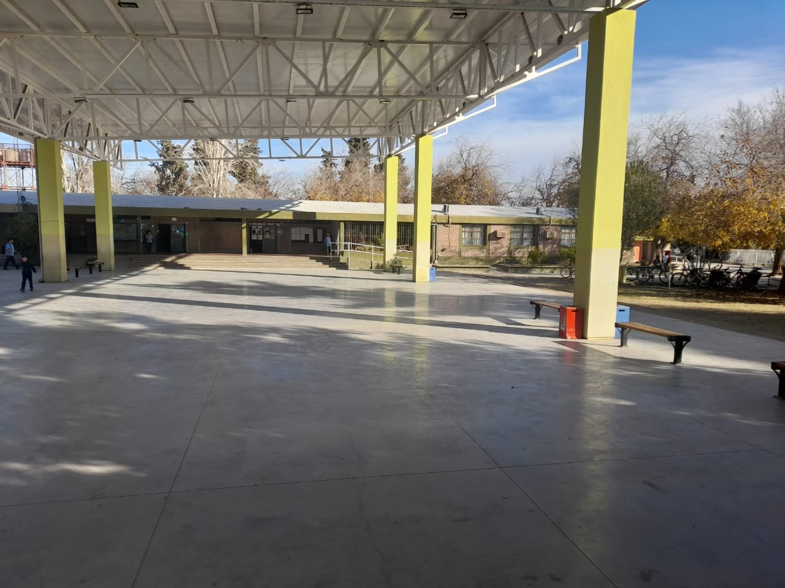
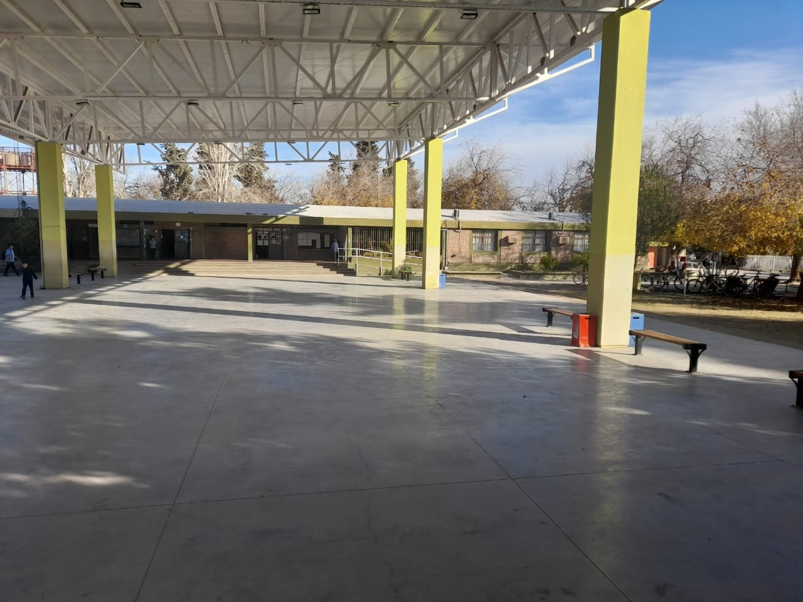

Organización Institucional

En el año 1944, la Sra. Carmen Bustos junto a su esposo, Don Benicio Bustos convocaron a una reunión en sus casa con los vecinos de la zona para dar forma a la idea de la creación de una escuela que cubriera la necesidad de la educación de los jóvenes. En 1946 comenzó a funcionar el nivel primario de la Escuela Arancibia y el secundario en los salones de la casa Pantaleon de los Ríos, hijo del fundador de Caucete. Esta iniciativa se desarrolló incansablemente a través de los años, acrecentado de tal manera que dio a otras escuelas del departamento: Agrotécnica Gonzalo Doblas ( a partir de la orientación Expertos Agropecuarios) y Escuela de Comercio Alfonsina Storni ( Perito mercantil o sección comercial). También la escuela Normal tuvo como anexos al Colegio Nacional de Angaco y al Colegio Nacional de San Martín (1970 a 1981). Clima institucional: Debido a que la planta funcional e infraestructura de la escuela era muy grande, se refleja en relaciones interpersonales más específicas y acotadas. Contexto: La Escuela Normal cuenta con una matrícula de 1080 estudiantes en el nivel secundario. Los jóvenes manifiestan diversas necesidades educativas y se observan claramente potenciales en educación física y áreas artísticas. En el ciclo básico existen claras dificultades en el área de Lengua y Matemática, sin embargo se mostraron progresos en los últimos años en el área de Lengua. El alumno que ingresa a nuestra institución pertenece a la clase media y proviene de escuelas primarias del departamento. Muchos jóvenes viajan de otros departamentos como de Julio, 25 de Mayo, Las Chacritas y el Encon. La Escuela Normal Superior Manuel Belgrano se inserta en el casco urbano de la Ciudad de Caucete.
Existe un PIE en la escuela. Se comenzó a elaborar en 1999. En 2015 se reformuló el AEC y también se trabajó sobre la misión, visión y objetivos institucionales. Allí se dio a conocer a alumnos, padres, docentes y comunidad educativa en general.
La Esc. Normal Superior General. Manuel Belgrano , ubicado en la villa cabecera del departamento Caucete forma parte de la comunidad desde hace más de 75 años. Cuna de la formación de muchos ciudadanos de dicho distrito y departamentos aledaños, es la escuela más grande y con una oferta educativa prometedora en los cuatro niveles educativos con que cuenta. Pero como toda institución es atravesada por múltiples dimensiones ya su vez recibe el impacto de las problemáticas económicas, sociales y políticas. Si bien en las últimas jornadas institucionales el análisis de los indicadores educativos permitió visibilizar espacios curriculares comprometidos y definir acciones para el presente ciclo lectivo 2023, acordamos trabajar en comprensión lectora, comunicación y resolución de problemas. También se manifestó la falta de compromiso, la apatía, desinterés, todas las situaciones de complejidad en el alumnado, lo que suma a la desvalorización de la función docente, de la educación y el conocimiento, obligando a hacer una mirada más reflexiva y crítica sobre la situación a plantear. Nuevas estrategias que tengan como objetivo mejorar el estado abúlico por el que atraviesan y diseñar un plan de ejecución para levantar los pilares de la excelencia.
Por todo lo expuesto se presentan los siguientes desafíos: Renovar el acuerdo escolar de convivencia. Repensar la misión y visión institucional. Elaborar dispositivos de seguimiento y acompañamiento para los alumnos en situación escolar. Implementar la modalidad Proyectos interdisciplinarios en ambos ciclos. Fortalecer todas las modalidades en el Ciclo orientado a través de charlas con profesionales, visitas a instituciones, etc
Las características generales de la escuela observada. La Escuela Normal Superior General Manuel Belgrano pertenece a la localidad de Caucete, Provincia de San Juan, la misma se ubica en una zona centro urbana ya que es una de las escuelas más grande del departamento, por lo tanto a ella concurren un total aproximado de 2.890 estudiantes. Si hablamos de la estructura del edificio escolar, podemos mencionar que se trata de un edificio histórico, ya que lleva 70 años formando estudiantes en sus 4 Niveles: Nivel Inicial,Primario, Secundario y Nivel Superior. El ingreso principal se encuentra por la zona este ingresando por la conocida calle 9 de julio al 964. Además, cuenta con un total de …. aulas, 1 anexo interno del personal directivo y secretarios, 1 sala de informática, 1 sala de biblioteca, 1 buffet, 1 patio techado y 1 patio al aire libre; podemos encontrar también 2 baños en el ala este y 2 baños en el ala oeste. Si nos vamos hacia el ala sur del edificio, nos encontramos con el patio de educación física allí también se puede visualizar un anfiteatro al aire libre. en cuanto a los estudiantes, podemos hablar de una diversidad cultural, debido a esto la escuela cuenta con aproximado de 2.890 estudiantes distribuidos entre nivel inicial, primario, secundario y Nivel Superior; este gran número de estudiantes requiere del acompañamiento del cuerpo docente, este abarca un total de 350 distribuidos en las secciones antes nombradas. La Escuela Normal Superior General Manuel Belgrano se enfoca en brindar una educación integral, promoviendo valores, conocimientos y habilidades que preparan a los estudiantes para su futuro académico y profesional. Además, es conocida por su compromiso con la comunidad y su participación en diversas actividades culturales y sociales en la provincia.

 

En lo observado y a travez de la planificación del espacio curricular informámatica, este mismo se refiere a la integración de las tic en el aula a travez de clases teoria sobre teoria y practica Desde el conocer las partes y funcionamiento de una computadora; y así mismo como utilizarla a travez de los programas de office como word, exel, power ponits y los servicios basicos de internet como redes sociales en el uso adecuado de estas teniendo en cuenta el contecto actual sobre el uso correcto y seguro. Solo cuenta con: el taller se imparten en dos partes una clase teorica y la siguiente clase practica de la toria vista; esta ultima se da una sala adaptada con 40 computadoras de las cuales solan funcionan 26; cabe aclarar que estas no estan adaptadas a las necesidades adaptadas en la innovación tecnologica y como dato no menor la sala no cuenta con acceso a red de internet. El taller se divide en cuatro divisiones 1º 1- 1º2- 1º3- 1º4 de los cuales deben turnarse en el uso de la sala por la tanto si existiera un feriado pierden tiempo y la escuela nunca a implementado un taller con TIC solo la presentación de talleres a traves de muestras anuales con herramientas como videos , pawer point , ect.


En el presente apartado se podrá acceder a la información sobre el rol del director, preceptor y Profesor a partir de 3 entrevista, las mismas se realizaron en la Institución “Escuela Normal Superior Gral. Manuel Belgrano”, durante el proceso de observación que se nos asigno durante el cursado de el espacio curricular Practica II. A partir del mismo consideramos que el ámbito educativo es el producto de quienes la componen como parte principal jerárquicamente. Cada uno de estos actores entrevistados desempeñan un papel crucial en ella, ya que desde cada uno de ellos abogan por un funcionamiento exitoso de la Institución. Las entrevistas aquí desarrolladas tienen como objetivo explorar, comprender y profundizar en las funciones, responsabilidades y desafíos de estos tres roles fundamentales; los cuales determinan a la formación académica y personal de los estudiantes, como así tambien el poder generar el desarrollo de un ambiente escolar propicio para los aprendizajes y la adquisición de competencias. A través de estas entrevistas, buscamos comprender desde una visión holística los roles del director, preceptor y profesor, estas perspectiva nos abrirán una ventana al real mundo de la docencia, esto en función de enriquecer nuestras practicas , con el fin de mejorar en estrategias y bases fundamentales a la hora de insertarnos en el contexto educativo, claramente sabemos que la innovación tecnológica es constante, es por esta razón que actualizarnos y adquirir competencias es más que importante para nosotras!